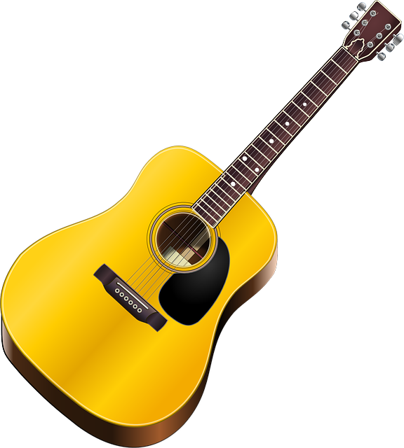

Acoustic Guitar
Acoustic guitars might not be as loud as their electric cuunterparts but they arguably have a better sound, one that's more natural and softer. The sound from the vibration of the strings is projected from the soundhole.

Electric Guitar
Electric guitars are great for creating different sounds. The "action"(how close the strings are to the fretboard) is lower it is easier to bend the strings. Electric guitars can also be connected to effects pedals to create differennt sounds.